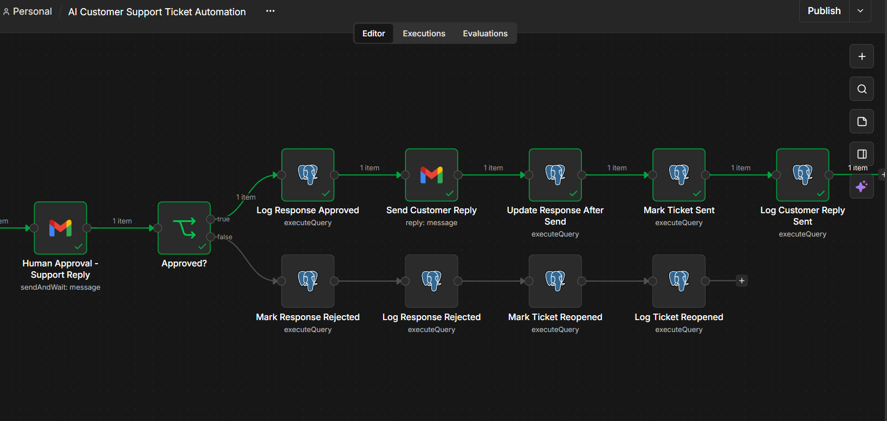

The model classifies it into structured fields. Sample message, fields simplified.
Then, the server checks the model.
if (!ALLOWED.priority.includes(out.priority)) {
return sendToReview(ticket);
}
const team = TEAM_BY_CATEGORY[out.category];
Routing comes from a fixed map, not the model. High priority posts to Slack.
Finally, a person approves the reply.
Hi, thanks for flagging this. I can see two charges for order 4471 and have asked our billing team to refund the duplicate.

Nothing is sent until a reviewer approves. Every step is written to the audit table.
What I build with
AI applicationsGemini, OpenAI, LangChain, pgvector
Backend APIsNode.js, Express, PostgreSQL, Redis
Automationn8n, webhooks, Gmail, Slack
3D and motionthree.js, GSAP, Lenis, GLSL
QualityPlaywright, axe, Supertest
Based in
Philippines, UTC+8
Studied
BS Information Technology
Looking for
Entry-level roles
I work from the process outward: find the trigger, shape the data, decide which system owns each step, then test what actually runs.
Lately that means AI with guardrails: retrieval that cites its sources, evaluation runs that can be compared side by side, and approval steps that keep a person in charge of what gets sent. I am looking for a team where that kind of care is normal.